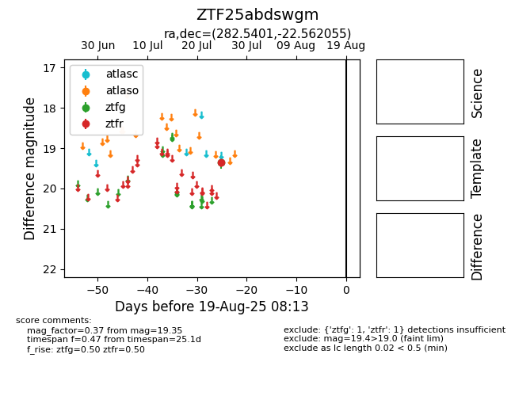

Target ZTF25abdswgm at 2025-08-06 17:27, see:
FINK: fink-portal.org/ZTF25abdswgm
Lasair: lasair-ztf.lsst.ac.uk/objects/ZTF25abdswgm
ALeRCE: alerce.online/object/ZTF25abdswgm
alt names
ZTF25abdswgm (ztf,fink)
coordinates:
equatorial (ra, dec) = (282.5401,-22.56206)
galactic (l, b) = (12.5105,-9.80945)
photometry
last ztfg=19.34, ztfr=19.35
1 ztfg, 1 ztfr detections
